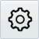

Where do I assign training?
- If your organization hosts your study: Assign training for InForm, Central Designer, Central Cording, or IRT in Clinical One.
- If Oracle hosts your study:
- Assign training for InForm, Central Designer, Central Coding, or IRT in the User Management Tool (UMT).
- Assign training for the User Management Tool (UMT) and other training that isn't associated with a study (such as a release you're considering upgrading to) in Clinical One.
Who is this guide for?
- Training administrators and training managers who need to manage training for InForm, Central Designer, Central Coding, IRT, or UMT.
- Delegated administrators who need to provision training administrators and managers in OHSIAMS Oracle Identity Self Service.
- Clinical One user managers who need to provision users in Clinical One.
For the computer and browser requirements for using Clinical One, see the Oracle® Health Sciences Clinical One Release Notes.
How do I provision users?
What are my tasks as a training administrator?
What are my tasks as a training manager?
How do I provision users?
1Overview of users and their tasks
Someone at your organization can have one or more of these roles:

Delegated administrators work in OHSIAMS Oracle Identity Self Service and are responsible for:
Provisioning user accounts for training administrators and training managers.
Sharing the URL for Clinical One with all Clinical One user managers, training administrators, and training managers.
Clinical One user managers work in Clinical One and are responsible for:
Assigning users the appropriate roles.
Training administrators work in Clinical One and are responsible for:
Creating training studies for supported Oracle Health Sciences products.
Assigning each training study to one or more training managers.
Training managers work in Clinical One and are responsible for:
Assigning training to trainees (not applicable for training associated with a study in the User Management Tool), and sending reminders about incomplete training.
Checking the training that a trainee has completed, including running reports for assigned and completed training.
Reviewing the twice-daily training completion reports that are sent over email, for your assigned studies.
Trainees work in Health Sciences Learn to complete their training and are reponsible for:
Signing in to Health Sciences Learn and completing their assigned training. After a training manager assigns training to a trainee or sends a reminder, the trainee receives an email with a link to Health Sciences Learn.
Note: Trainees who don't have an Oracle account can create one for themselves by clicking the link in the email. They'll receive another email to verify their email address and then can take their assigned training.
2How to get access to OHSIAMS Oracle Identity Self Service and Clinical One
OHSIAMS Oracle Identity Self Service
Who needs access? Delegated administrators.
How do I get the product URL? You'll receive a welcome letter over email with the product URL.
How do I get my user name and password? After Oracle creates your account in OHSIAMS Oracle Identity Self Service, you receive two emails, one with your user name and another with a temporary password and a link to reset your password.
What if I want to add or change delegated administrators? Contact Oracle Support.
Clinical One
Who needs access? Clinical One user managers, training administrators, and training managers.
How do I get the product URL? The URL is sent to the delegated administrator, who is responsible for sharing it with all Clinical One users.
How do I get my user name and password? After the delegated administrator creates your account in OHSIAMS Oracle Identity Self Service, you receive two emails, one with your user name and another with a temporary password and a link to reset your password.
3Make the roles available to Oracle (One-time only)
Who does this? Your company's delegated administrator.
Make ClinicalOne_Production and ClinicalOne_Production_AssignGlobalRoles available to Oracle so that they can be assigned to Health Sciences Support in case you need help.
Tip: If your organization is already using Clinical One to deploy studies, you probably already published both of these roles, and you don't have to publish them again.
Open OHSIAMS Oracle Identity Self Service.
Under the Administration menu on the left, click Roles.
In the Search section, for Display Name:
From the list, select Equals.
In the field, type ClinicalOne_Production.
Click Search.
In the Search Results, click the link in the Display Name column to open the role page.
In the row of controls at the top of the role page, click Publish Role to External Organization.
Select the checkbox for the oracle organization.
Click Submit. A confirmation message appears at the bottom of the dialog box.
Repeat steps 3 to 8 for the ClinicalOne_Production_AssignGlobalRoles role (Display Name: AssignGlobalRoles).
4Provision training administrators and training managers in OHSIAMS Oracle Identity Self Service
Who does this? A delegated administrator.
If you previously managed training using User Management Tool, the Clinical One user managers, training administrators, and training managers at your organization might have already been created for you in OHSIAMS Oracle Identity Self Service. All you have to do is assign them the appropriate roles!
Sign in to OHSIAMS Oracle Identity Self Service.
Add any Clinical One user managers, training administrators, or managers who haven't yet been created.
For instructions on adding users, see Create a user account in the Oracle Health Sciences Identity and Access Management Service Administrator Guide.
For one Clinical One user manager (and that might be you), assign the AssignGlobalRoles role (its Display Name is AssignGlobalRoles, and its Name is ClinicalOne_Production_AssignGlobalRoles).
Note: Your organization might have additional Clinical One user managers, but only one person needs the AssignGlobalRoles role. The role should be assigned to the person who will sign in to Clinical One first. Then that person can create other users, including additional Clinical One user managers, from within Clinical One.
For training administrators (including yourself, if you are both a delegated administrator and a training administrator for your organization), assign the ClinicalOne_Production role.
Reminder: If you are already using Clinical One to deploy studies, you've probably set up the AssignGlobalRoles and ClinicalOne_Production roles so that all role assignments must be approved. For details about how to approve the assignments, see Activate approval for a role in the Oracle Health Sciences Identity and Access Management Service Administrator Guide.
For training managers, assign the ClinicalOne_Production role.
 Watch training.
Watch training.5Create users in Clinical One
Who does this? A Clinical One user manager. Don't forget to create your own account!
Sign in to Clinical One.
On the Home page, click Global Settings, along the top.
Click Create Global User.
From the Full Name drop-down, select the user's name.
Click on the Global Roles field and select the appropriate role:
Global User Manager: Assign this to Clinical One user managers at your organization, including yourself.
Training Administrator: Assign this role to all training administrators.
Training Manager: Assign this role to all training managers.
Tips:
Users at your organization might have one, some, or all of these roles. And don't forget to assign these roles, as appropriate, to yourself.
If someone has both the Training Administrator and Training Manager roles, they can see and manage all studies but receive the training completion report over email only for the studies they're assigned to.
Click Create.
Create additional users as needed.
What are my tasks as a training administrator?
6Create a training study
If Oracle hosts your study: The only training studies you need to create are for assigning training that isn't associated with a study, such as training for the User Management Tool (UMT) or for a release you're considering upgrading to. You assign training associated with a study in UMT, and you can view (but not change) it here.
If your organization hosts your study: Create a training study so you can assign training for InForm, Central Designer, Central Coding, and IRT.
Sign in to Clinical One, open the Training Study drop-down, and select Create Training Study.
Enter the study name, and click Save.
Tip: The study name you enter here is for tracking the study, and it doesn't need to match the actual study name. You cannot edit the study name after it is created.
To create another study, click Create Another Study.
To return to the Home page, click Close.
7Assign the training study to training managers
Assign a study to a training manager so that they can manage training for the study and receive the twice-daily training completion report over email.
Sign in to Clinical One, open the Training Study drop-down, and select Assign Studies to Training Managers.
In the table, locate the row for the user who will manage training for one or more studies, and click in the Study column for the user's row.
All studies that the user manages training for appear.
Click again in the Study column for the user's row.
A list of all training studies appears.
Select a study to assign it to the user. For multiple studies that need to be assigned to one or more users, repeat the process.
Tip: You can assign a study to one or more training managers.
Click Save.
What are my tasks as a training manager?
8Add or remove trainees from a study, and assign training to them
If your Home page includes training studies created in User Management Tool (UMT):
You cannot change the trainees or their training assignments.
However, you can edit trainees' names, run reports, and receive the twice-daily training completion report over email.
Sign in to Clinical One, click the study settings button  for the study you want to add a trainee to, and select Open Settings.
Click Add Trainee.
To add one trainee at a time:
To the right above the table, click Add Row.
In the blank row that appears in the table, enter details about the trainee and select the training the trainee must take.
Repeat steps a and b to add more trainees, if necessary.
Tip: To assign a trainee to more than one course, add more rows with the same trainee details and a different course. Alternatively, you can assign additional training once the trainee has been assigned to the first course.
After you're finished adding trainees, click Save.
An assignment email is sent to the trainee(s). The training is marked as Complete and no email is sent if the trainee completed the training in the last 12 months, as long as the trainee completed the training under the same email address.
To add multiple trainees at the same time:
Click Training Assignment Template, and save the spreadsheet template to your computer.
Tip: In the Google Chrome browser, downloaded files typically appear along the bottom of your browser window.
Fill in the fields in the spreadsheet. Make sure you enter details in all columns.
Complete, save, and close the spreadsheet.
Click Upload File, and then navigate to and select the file.
The details from the spreadsheet appear in the table.
Click Save.
An assignment email is sent to the trainee(s). The training is marked as Complete and no email is sent if the trainee completed the training in the last 12 months, as long as the trainee completed the training under the same email address.
Tip: To remove trainees from a study, select the trainees, and from the Manage Users drop-down, select Remove.
9Assign additional training to one or more trainees
If your Home page includes training studies created in User Management Tool (UMT), you can't change training assingments here. You must perform this task in UMT.
Sign in to Clinical One, click the study settings button for a study, and select Open Settings.
Select one or more trainees who need to be assigned the same training.
From the Manage Users drop-down, select Assign Training.
Click in the empty field, and select the appropriate training from the drop-down.
Click Save.
An assignment email with the joining instructions is sent to the trainees, unless they have completed the training within the last 12 months. If a trainee has completed the training and the trainee has the same email address in both studies, the training status is marked as Complete.
10Send an email reminder to trainees who haven't completed training
You can send an email reminder for all training studies on your Home page, including any training studies created in UMT.
Sign in to Clinical One, click the study settings button for a study, and select Open Settings.
Select the trainees who should receive the training email reminder.
Tip: To select all trainees, select the column-level checkbox on the left in the table. Reminder emails are sent only to trainees who have incomplete training.
From the Manage Users drop-down, select Send Email Reminder.
11View a report of all assigned and completed training
You can run training reports for all training studies owhich are assigned to you as a Training Manager.
To run a report:
Sign in to Clinical One.
On the Home page, click Reports, along the top.
Select Health Sciences Learn Training Report.
On the right, make sure Settings is expanded, and fill in the fields.
Click Run Report.
Tip: While the report is running, you can navigate away from the Reports page and continue working.
To download a report:
In the lower right, expand Download Reports and locate the report.
Click the Download link.
Tip: To view CSV, HTML, and PDF files, make sure your browser isn't blocking pop-ups.
Reminder: All dates in reports are in the UTC (Coordinated Universal Time) time zone, which corresponds to the Greenwich Mean Time zone.
Note: Every 12 hours you receive a notification on your email for any completed training in your studies in the previous 12 hours.
12Change a trainee's name
If your Home page includes training studies created in UMT, you have to change trainees' name in both places: UMT and Clinical One.
Sign in to Clinical One, click the study settings button for a study, and select Open Settings.
Select the trainee.
From the Manage Users drop-down, select Edit.
Modify the details.
Click Save.
13Check a trainee's training status
You can check a trainee's status for all training studies on your Home page, including any training studies created in UMT.
Sign in to Clinical One, click the study settings button for a study, and select Open Settings.
Select a trainee.
On the right, make sure User Training is expanded.
All training assigned to the trainee is listed. If the user completed the training, the completion date appears. For incomplete training, the date the training was assigned appears.
 You're done!
You're done!
Find out more about Clinical One!
See the Oracle Health Sciences Clinical One documentation library on the Oracle Help Center.
Watch short training videos on the Oracle Help Center.
For assistance, contact Health Sciences Cloud Support.
Write to us at clinical_one_doc_feedback_us_grp@oracle.com.